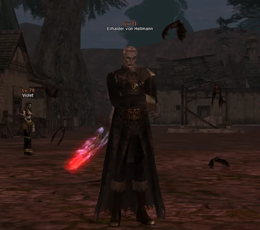
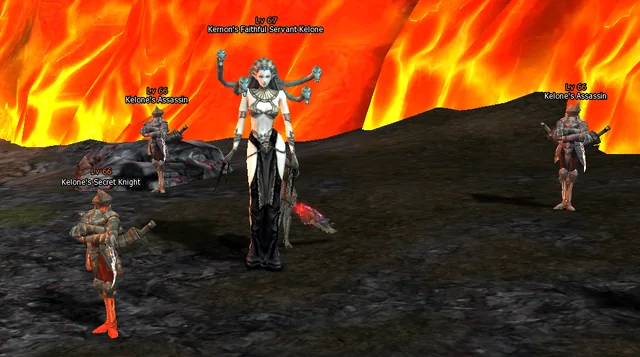
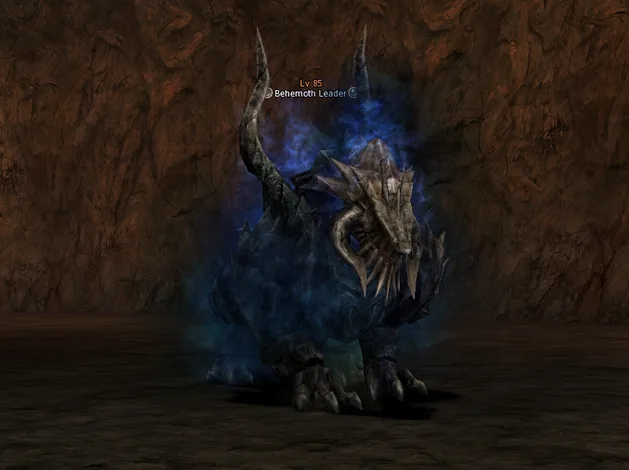

OCR системного чату
Скрипт знаходить повідомлення про появу або смерть РБ та запускає потрібний таймер.
01OCR зчитує системний чат Lineage 2, запускає таймери, показує їх поверх гри та синхронізує активних РБ на онлайн-карті.
Єдина система
Замість ручних секундомірів, скрінів у чаті та постійного перемикання між вікнами.
Скрипт знаходить повідомлення про появу або смерть РБ та запускає потрібний таймер.
01Таймери завжди видно поверх клієнта. Колір, масштаб, позиція та розмір налаштовуються.
02Активні таймери з’являються на карті з назвами, координатами та станом респу.
03Окремі повідомлення й сценарії для епік-босів, Lilith/Anakim та інших серверних подій.
04Швидке налаштування
Зона захвату налаштовується один раз. Після цього OCR читає лише потрібну частину вікна та не заважає грі.
Гнучкий overlay
Координати та розмір задаються чисельно, тому overlay легко поставити в потрібний кут.
Перевір результат до запуску монітора та не витрачай час у грі.
Окремо задається розмір кадру OBS і зона системного чату.
Жива карта
Перемикай мову назв, шукай потрібного боса й стеж за активними таймерами з будь-якого пристрою.
НОВА ФУНКЦІЯ · YURA RB CONTROL
Натисни на будь-якого РБ на онлайн-карті та відкрий його довідник: ігровий скриншот, назви RU / EN, локація, телепорт, як дістатися і відео за наявності.

З'являється лише вночі за ігровим часом. Від Forest of the Dead прямуй до Cursed Village.

Спустися до лавової низини, тримайся правого схилу та рухайся до місця появи боса.

На першому рівні Lair рухайся прямо, на розвилці праворуч, а потім ліворуч через кістяний прохід.
Картки рейд-босів відкриваються безпосередньо з маркерів на карті.
Зображення босів допомагають упізнати ціль. Для більшості карток додано авторські ігрові скриншоти.
Назви локацій, точка телепорту, напрямок руху та підказки до місця появи РБ.
Відеогайди за наявності, пошук босів, статуси і синхронізація таймерів в одній карті.
ПРИНЦИП РОБОТИ · OBS + OCR
За описаною архітектурою Yura RB Monitor розпізнає видимий системний чат із відеопотоку OBS та веде таймери без потреби читати пам’ять гри, вводити код у клієнт чи керувати персонажем. Водночас це не гарантія відсутності блокування: правила конкретного сервера й рішення античіта можуть відрізнятися.
Три мови
Лаунчер, налаштування та основні підказки доступні українською, російською й англійською.
FAQ
Коротко про те, що потрібно для стабільної роботи.
Так. OBS передає зображення системного чату через WebSocket, а скрипт розпізнає повідомлення OCR.
Так. У налаштуваннях доступні координати X/Y, ширина, висота, масштаб і колір тексту.
Так. Відкрийте карту на ліцензованому ПК, натисніть «Телефон / QR» і відскануйте одноразовий QR-код. До однієї ліцензії прив’язується один ПК і один мобільний браузер. Звичайне пересилання адреси карти іншому телефону доступу не надає.
База фраз і босів налаштовується під сервер. Поточна версія орієнтована на High Five.
Монітор працює через OBS + OCR, але правила конкретних серверів можуть відрізнятися.
Менше рутини. Більше гри.
Встанови компоненти, вибери зону чату та запускай монітор однією кнопкою.